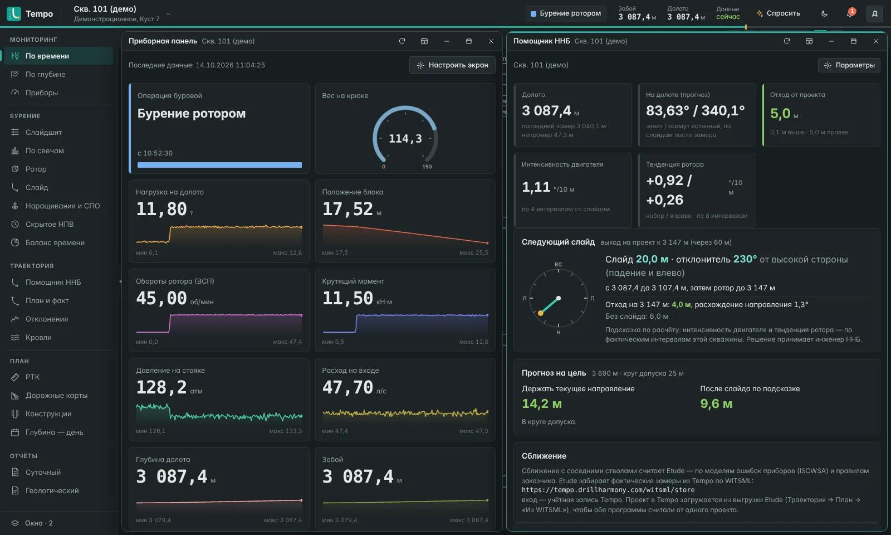

DrillHarmony
Комплексные решения для наклонно-направленного бурения: проектирование траекторий, онлайн-мониторинг и подготовка инженеров ННБ.
проектирования
мониторинг 24/7
ННБ и ГТИ
инженеров
технологии
Наши продукты
Единая экосистема инструментов для задач ННБ. Закрываем ключевые задачи — проектирование, сопровождение бурения, онлайн-мониторинг ГТИ, телеметрии и ННБ — в интегрированной среде.
Технологии, которые работают
к каждому проекту →
SlideX
Пульт, КНБК, геология, раствор и осложнения. Работает в браузере, ставить на рабочие места ничего не нужно.
Каталог оборудования с 3D-моделями. Перекос ВЗД, калибраторы, УБТ и яс меняют физику проводки.
У каждой попытки своя реализация разреза. Буримость, ГК и сопротивление по пластам, геонавигация в коллекторе.
Окно давлений: поровое, ЭЦП, гидроразрыв. Реология, смазка, система очистки.
ГНВП с закрытием превентора и глушением, прихваты с ясом и ваннами, вибрации, поглощения, сбои телесистемы.
Антиколлизия по ISCWSA, эллипсы неопределённости, проектирование профиля, «метла», гидравлика.
Экзамены под контролем сервера, сертификаты с QR-кодом, ИИ-наставник, отчёт руководителю.
Tempo
Онлайн-мониторинг бурения. Данные с буровой в реальном времени сразу для всех служб: ГТИ, ННБ, растворщиков, долотчиков, супервайзера и заказчика.
Все данные станций ГТИ и ННБ: параметры бурения, раствор, хроматограф, отчёты по раствору и долоту.
По времени и по глубине, приборы с трендами. Любой раздел можно открыть в отдельном окне, две скважины рядом.
Операции, наращивания и СПО определяются автоматически, часы сверх норматива считаются по сменам и видам работ.
Положение долота, фактическая интенсивность двигателя, подсказка следующего слайда и прогноз на цель.
План и факт в 2D и 3D, кровли пластов, отклонения от проекта.
Суточный и геологический отчёт, выгрузка в Excel, черновик сводки по расчётам Tempo.

Etude
Траектории и инженерные расчёты бурения в браузере, с ИИ-помощником. Работает на сервере заказчика и на кусту без связи, проекты переносятся из EDM XML.
Типовые профили J, S, горизонтальные; решатель «на цель». Автоподбор траектории и всего куста с учётом соседей и ограничений.
Эллипсы неопределённости по ISCWSA, модели приборов OWSG и заказчика; коэффициент разделения и вероятность пересечения; матрица сближений по месторождению.
Фактические замеры, контроль качества, отклонение от проекта и прогноз на долото.
Вес на крюке, момент, изгиб; давление на стояке, ЭЦП, очистка ствола; управление скважиной.
Прочность обсадных колонн по API 5C3 и ГОСТ 632, износ; компоновка низа бурильной колонны; цементирование.
График «глубина — сутки» по нормам подрядчика и стоимость скважины; сравнение вариантов проекта.
Запись станции ГТИ из файла: режимы, трение по факту, прогноз нагрузок до забоя и тренд трения.
Проект сверяется со всеми расчётами до выдачи на буровую, программа на бурение выгружается в Word.
EDM XML, Excel; отчёты в PDF, Excel и Word; установка на сервер заказчика.
Встроенный помощник DrillHarmony, российские и зарубежные модели или локальная модель. Отвечает по руководству, запускает расчёты и открывает окна по просьбе словами. Считает программа.
Ствол берётся на куст: работа без интернета, правки уходят на сервер при связи.
Обсуждение, подписи «разработал — проверил — утвердил», версии проекта.
Etude наглядно
Etude для инженера и фрилансера
Посчитать скважину самому: профиль, сближения, нагрузки и программа на бурение прямо в браузере, без сервера компании. Для подработки, второго мнения по чужому проекту и сопровождения на кусту.
Полезное инженеру
Расчёты и практика наклонно-направленного бурения: статьи с формулами и примерами, онлайн-калькуляторы.
Траектория и посадка, toolface, инклинометрия и SAG, MSE, гидравлика долота, ВЗД, вес на крюке, ЭЦП, объём скважины
Положение отклонителяКуда ставить отклонитель, чтобы выйти на нужные зенит и азимут
Траектория из Excel в 3DВставьте замеры и получите координаты, разрез, план и расстояние до соседнего ствола
Просмотр LAS онлайнПланшет ГК, сопротивления, нейтрона и плотности прямо в браузере
Игра: посади горизонталь60 секунд, слайд и ротор, кровля по ГК. Сколько наберёте из 100?
Тесты по ННБПроверьте себя: траектория, слайд, гидравлика, долото, WITS и WITSML
О компании
DrillHarmony делает программы для наклонно-направленного бурения: тренажёр инженера ННБ SlideX, онлайн-мониторинг бурения Tempo и проектирование траекторий Etude. Программы работают в браузере и на сервере компании-заказчика.
Считает программа
Цифры берутся из расчёта по данным скважины. ИИ только пишет текст, решение за инженером.
Свои расчёты
Открытые методы (минимальная кривизна, ISCWSA) реализованы самостоятельно.
Данные у заказчика
Облако или сервер компании, локальная модель ИИ в контуре заказчика.
Сделано для буровой
Работа без связи на кусту, данные не теряются при обрыве канала.
Контакты
Демонстрация, подключение буровых к Tempo, личный доступ к SlideX, установка на сервер вашей компании. Напишите, ответим в течение рабочего дня.